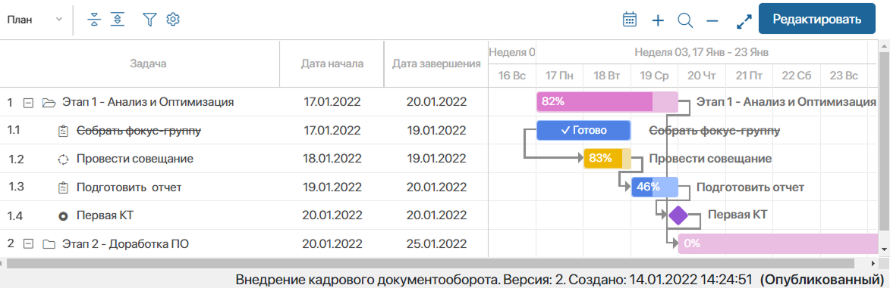
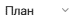
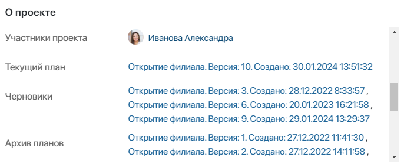

План проекта отображается в карточке проекта на вкладке Календарный план и состоит из задач различного типа. Для них установлена последовательность выполнения, определены сроки и исполнители.
В левой части плана проекта вы увидите список задач. В правой части — каждой задаче соответствует цветной отрезок с учётом её типа и сроков, а также процента выполнения. Завершённая задача отображается зачёркнутой с пометкой Готово, цвет отрезка изменяется на более тёмный.
Временной интервал на видимой части плана соответствует текущей дате. Если эта дата находится за пределами сроков проекта (до или после), вы увидите соответственно начало проекта или период его завершения.
Внизу плана вы можете просмотреть название проекта, номер текущей версии плана, дату её создания и статус.

Администратор системы может:
- включить отображение нумерации задач в списке с учётом их вложенности;
- изменить цвет оформления для каждого типа задач;
- настроить редактирование плана на самой вкладке карточки или в отдельном окне.
Также для контроля выполнения нескольких проектов можно настроить отображение их планов вдоль одной временной оси в карточке приложения. Подробнее читайте в статье «Просмотр планов группы проектов».
Панель инструментов для просмотра плана
Вы можете использовать настройки, которые размещены над планом.
 — выбрать, какие сроки задач отобразить: План, Прогноз или Факт.
— свернуть или развернуть все подзадачи в списке задач.
— открыть окно поиска, чтобы задать параметры и отсортировать по ним элементы плана с учётом их вложенности. Администратор системы может определить поля для сортировки.
— открыть меню опций для отображения дополнительных данных:
- Показать границы проекта — обозначить начало и конец проекта;
- Показать текущую дату — указать текущую дату;
- Скрыть выходные — скрыть выходные дни. Опция доступна, если в проекте включена настройка Использовать рабочий календарь;
- Показать просроченные задачи — выделить просроченные задачи;
- Показать критический путь — выделить красным цветом задачи, которые завершаются в дату окончания проекта или позже, а также все связанные с ними задачи.
- Скрывать выполненные — не показывать завершённые задачи. При этом выполненная родительская задача с типом Задача отобразится, если в ней есть незавершённые подзадачи.
— перейти к текущей дате.
 — увеличить или уменьшить отображаемый период времени. План можно показывать с разбивкой на следующие периоды времени: день, неделя, месяц, квартал или год.
— увеличить или уменьшить отображаемый период времени. План можно показывать с разбивкой на следующие периоды времени: день, неделя, месяц, квартал или год.
— отобразить план на весь экран. В этом режиме можно просмотреть ресурсную панель проекта.
Редактировать — действие доступно, если у вас есть право изменять план. Позволяет перейти к редактированию плана.
Этапы работы с планом проекта
Подготовка плана проекта и работа с ним в процессе реализации состоит из следующих этапов:
- Добавьте на диаграмму задачи плана и определите их типы.
- Свяжите задачи плана между собой, чтобы настроить последовательность их выполнения.
- Сохраните Черновик план проекта.
- Если вы работаете с проектом, план которого скопирован из шаблона типа проекта, проверьте сроки выполнения задач плана и ответственных, которые скопируются в черновик плана текущего проекта. Если нужно, внесите изменения.
- Если в системе настроено согласование плана проекта, отправьте готовый черновик плана на согласование.
- Опубликуйте план проекта. После этого задачи плана с типами Задача и Контрольная точка будут назначены на ответственных сотрудников.
- Просматривайте план проекта, чтобы контролировать его выполнение. Запрашивайте прогнозные сроки выполнения задач
- Добавляйте новые задачи в план проекта. Вы можете создавать новые версии и сравнивать их с прежними.
- Если работа с планом проекта завершена, переместите проект в архив. Обратите внимание, архивированный проект можно вернуть в работу.
Статусы плана проекта
Версии плана могут иметь следующие статусы:
- Черновик — новая или отредактированная версия плана, которая сохранена, но не согласована и не опубликована. Также этот статус присваивается плану после восстановления проекта из архива. Черновиков может быть несколько;
- На согласовании — версия плана, отправленная на согласование, по которой ещё не принято решение согласующим;
- Согласован — согласованная, но ещё не опубликованная версия плана.
На диаграмме плана справа от статуса На согласовании или Согласован указано имя согласующего.
- Текущий — опубликованная версия плана. Текущий план может быть только один;
- В архиве — текущая версия плана приобретает этот статус, если публикуется другая версия плана или проект перемещается в архив.
Эти статусы плана проекта установлены по умолчанию, их нельзя удалить и коды статусов нельзя изменить. Администратор системы может добавить дополнительные статусы.
Статусы всех версий можно просмотреть в карточке проекта в виджете О проекте. Здесь отображаются:
- Текущий план;
- Черновики — здесь указаны версии со статусами Черновик, На согласовании и Согласован;
- Архив планов — в этом поле указаны все версии плана.
